Initialize
using Plots
gaston()Plots.GastonBackend()Lines
A simple line plot of the columns.
plot(Plots.fakedata(50, 5), w = 3)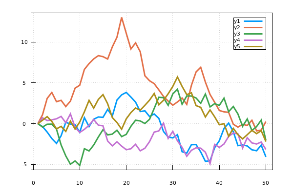
Parametric plots
Plot function pair (x(u), y(u)).
plot(sin, (x->begin
sin(2x)
end), 0, 2π, line = 4, leg = false, fill = (0, :orange))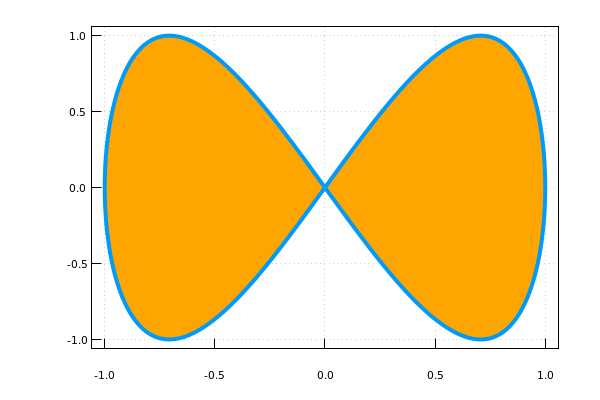
Colors
Access predefined palettes (or build your own with the colorscheme method). Line/marker colors are auto-generated from the plot's palette, unless overridden. Set the z argument to turn on series gradients.
y = rand(100)
plot(0:10:100, rand(11, 4), lab = "lines", w = 3, palette = cgrad(:grays), fill = 0, α = 0.6)
scatter!(y, zcolor = abs.(y .- 0.5), m = (:heat, 0.8, Plots.stroke(1, :green)), ms = 10 * abs.(y .- 0.5) .+ 4, lab = "grad")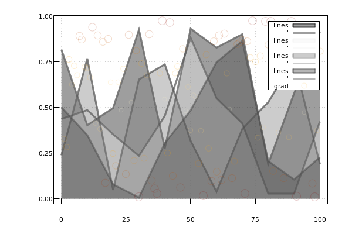
Global
Change the guides/background/limits/ticks. Convenience args xaxis and yaxis allow you to pass a tuple or value which will be mapped to the relevant args automatically. The xaxis below will be replaced with xlabel and xlims args automatically during the preprocessing step. You can also use shorthand functions: title!, xaxis!, yaxis!, xlabel!, ylabel!, xlims!, ylims!, xticks!, yticks!
using Statistics
y = rand(20, 3)
plot(y, xaxis = ("XLABEL", (-5, 30), 0:2:20, :flip), background_color = RGB(0.2, 0.2, 0.2), leg = false)
hline!(mean(y, dims = 1) + rand(1, 3), line = (4, :dash, 0.6, [:lightgreen :green :darkgreen]))
vline!([5, 10])
title!("TITLE")
yaxis!("YLABEL", :log10, minorgrid = true)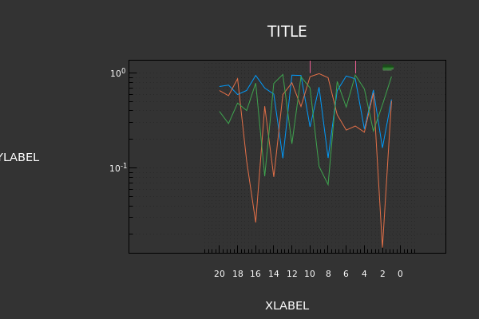
Images
Plot an image. y-axis is set to flipped
Plots.reset_defaults() # hide
using Logging; Logging.disable_logging(Logging.Warn) # hide
import FileIO
import Downloads
path = Downloads.download("http://juliaplots.org/PlotReferenceImages.jl/Plots/pyplot/0.7.0/ref1.png")
img = FileIO.load(path)
plot(img)
png("gaston_ex6") # hide
Arguments
Plot multiple series with different numbers of points. Mix arguments that apply to all series (marker/markersize) with arguments unique to each series (colors). Special arguments line, marker, and fill will automatically figure out what arguments to set (for example, we are setting the linestyle, linewidth, and color arguments with line.) Note that we pass a matrix of colors, and this applies the colors to each series.
ys = Vector[rand(10), rand(20)]
plot(ys, color = [:black :orange], line = (:dot, 4), marker = ([:hex :d], 12, 0.8, Plots.stroke(3, :gray)))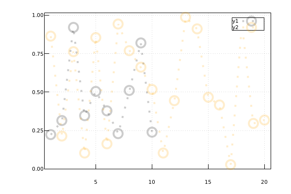
Build plot in pieces
Start with a base plot...
plot(rand(100) / 3, reg = true, fill = (0, :green))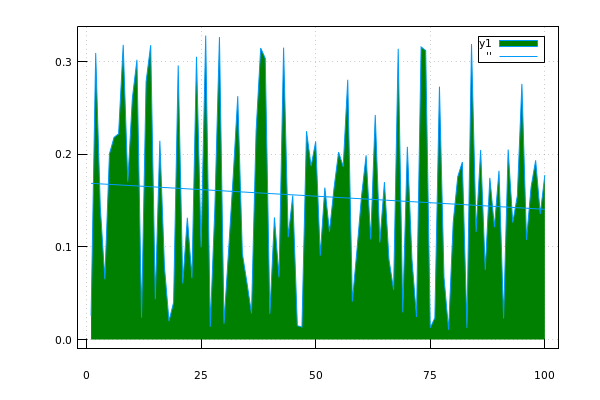 and add to it later.
scatter!(rand(100), markersize = 6, c = :orange)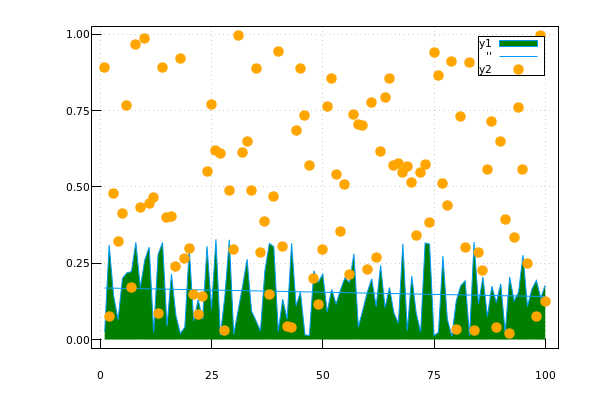
Histogram2D
histogram2d(randn(10000), randn(10000), nbins = 20)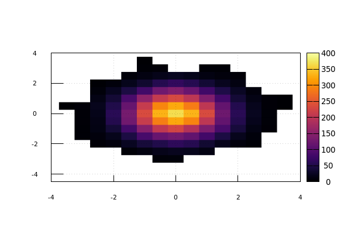
Line types
linetypes = [:path :steppre :steppost :sticks :scatter]
n = length(linetypes)
x = Vector[sort(rand(20)) for i = 1:n]
y = rand(20, n)
plot(x, y, line = (linetypes, 3), lab = map(string, linetypes), ms = 15)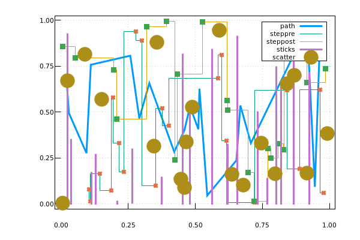
Line styles
styles = filter((s->begin
s in Plots.supported_styles()
end), [:solid, :dash, :dot, :dashdot, :dashdotdot])
styles = reshape(styles, 1, length(styles))
n = length(styles)
y = cumsum(randn(20, n), dims = 1)
plot(y, line = (5, styles), label = map(string, styles), legendtitle = "linestyle")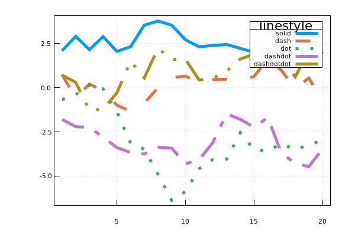
Marker types
markers = filter((m->begin
m in Plots.supported_markers()
end), Plots._shape_keys)
markers = permutedims(markers)
n = length(markers)
x = (range(0, stop = 10, length = n + 2))[2:end - 1]
y = repeat(reshape(reverse(x), 1, :), n, 1)
scatter(x, y, m = markers, markersize = 8, lab = map(string, markers), bg = :linen, xlim = (0, 10), ylim = (0, 10))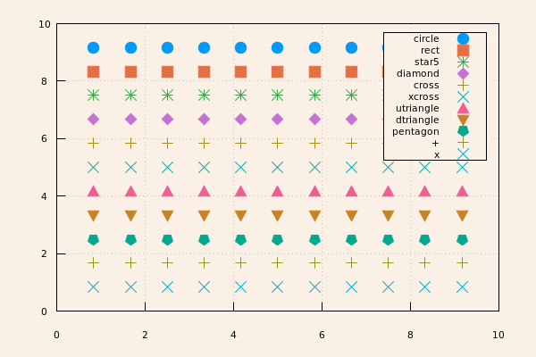
Bar
x is the midpoint of the bar. (todo: allow passing of edges instead of midpoints)
bar(randn(99))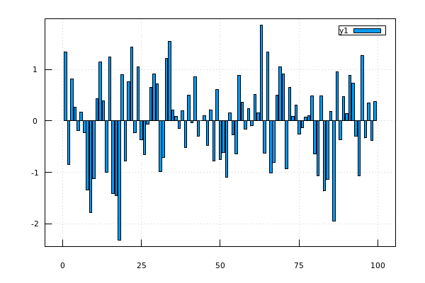
Histogram
histogram(randn(1000), bins = :scott, weights = repeat(1:5, outer = 200))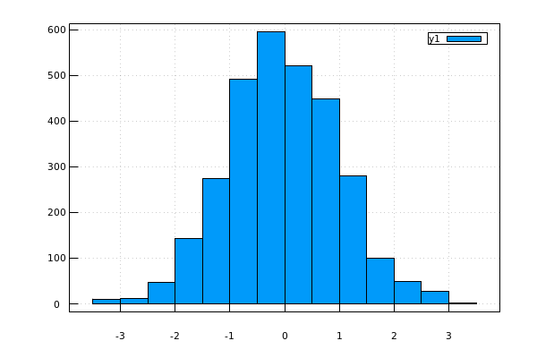
Subplots
Use the layout keyword, and optionally the convenient @layout macro to generate arbitrarily complex subplot layouts.
l = @layout([a{0.1h}; b [c; d e]])
plot(randn(100, 5), layout = l, t = [:line :histogram :scatter :steppre :bar], leg = false, ticks = nothing, border = :none)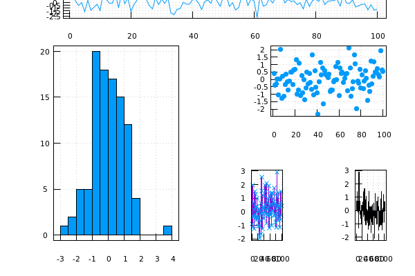
Adding to subplots
Note here the automatic grid layout, as well as the order in which new series are added to the plots.
plot(Plots.fakedata(100, 10), layout = 4, palette = cgrad.([:grays :blues :heat :lightrainbow]), bg_inside = [:orange :pink :darkblue :black])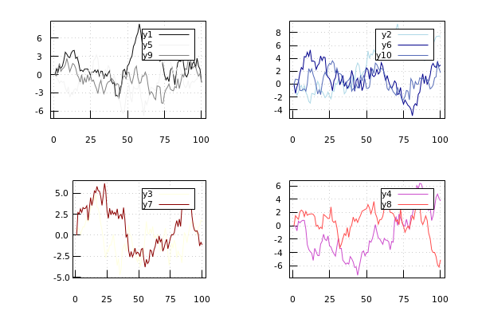
using Random
Random.seed!(111)
plot!(Plots.fakedata(100, 10))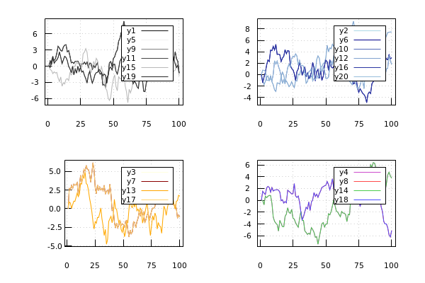
Open/High/Low/Close
Create an OHLC chart. Pass in a list of (open,high,low,close) tuples as your y argument. This uses recipes to first convert the tuples to OHLC objects, and subsequently create a :path series with the appropriate line segments.
n = 20
hgt = rand(n) .+ 1
bot = randn(n)
openpct = rand(n)
closepct = rand(n)
y = OHLC[(openpct[i] * hgt[i] + bot[i], bot[i] + hgt[i], bot[i], closepct[i] * hgt[i] + bot[i]) for i = 1:n]
ohlc(y)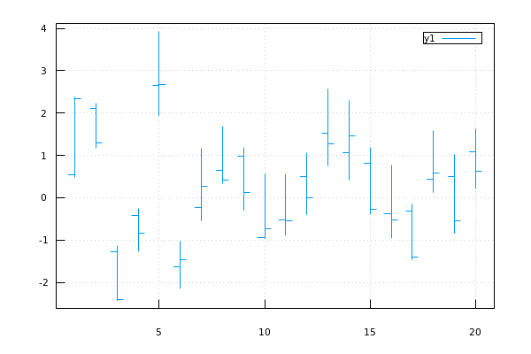
Annotations
The annotations keyword is used for text annotations in data-coordinates. Pass in a tuple (x, y, text), a vector of annotations, each of which is a tuple of x, y and text. You can position annotations using relative coordinates with the syntax ((px, py), text), where for example px=.25 positions the annotation at 25% of the subplot's axis width. text may be a simple String, or a PlotText object, which can be built with the method text(string, attrs...). This wraps font and color attributes and allows you to set text styling. text may also be a tuple (string, attrs...) of arguments which are passed to Plots.text.
annotate!(ann) is shorthand for plot!(; annotation=ann).
Series annotations are used for annotating individual data points. They require only the annotation; x/y values are computed. Series annotations require either plain Strings or PlotText objects.
y = rand(10)
plot(y, annotations = (3, y[3], Plots.text("this is #3", :left)), leg = false)
annotate!([(5, y[5], ("this is #5", 16, :red, :center)), (10, y[10], ("this is #10", :right, 20, "courier"))])
scatter!(range(2, stop = 8, length = 6), rand(6), marker = (50, 0.2, :orange), series_annotations = ["series", "annotations", "map", "to", "series", Plots.text("data", :green)])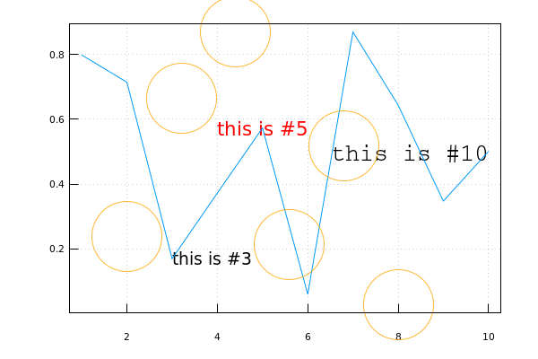
Custom Markers
A Plots.Shape is a light wrapper around vertices of a polygon. For supported backends, pass arbitrary polygons as the marker shapes. Note: The center is (0,0) and the size is expected to be rougly the area of the unit circle.
verts = [(-1.0, 1.0), (-1.28, 0.6), (-0.2, -1.4), (0.2, -1.4), (1.28, 0.6), (1.0, 1.0), (-1.0, 1.0), (-0.2, -0.6), (0.0, -0.2), (-0.4, 0.6), (1.28, 0.6), (0.2, -1.4), (-0.2, -1.4), (0.6, 0.2), (-0.2, 0.2), (0.0, -0.2), (0.2, 0.2), (-0.2, -0.6)]
x = 0.1:0.2:0.9
y = 0.7 * rand(5) .+ 0.15
plot(x, y, line = (3, :dash, :lightblue), marker = (Shape(verts), 30, RGBA(0, 0, 0, 0.2)), bg = :pink, fg = :darkblue, xlim = (0, 1), ylim = (0, 1), leg = false)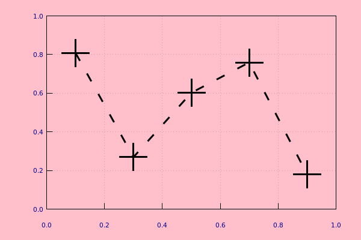
Contours
Any value for fill works here. We first build a filled contour from a function, then an unfilled contour from a matrix.
x = 1:0.5:20
y = 1:0.5:10
f(x, y) = begin
(3x + y ^ 2) * abs(sin(x) + cos(y))
end
X = repeat(reshape(x, 1, :), length(y), 1)
Y = repeat(y, 1, length(x))
Z = map(f, X, Y)
p1 = contour(x, y, f, fill = true)
p2 = contour(x, y, Z)
plot(p1, p2)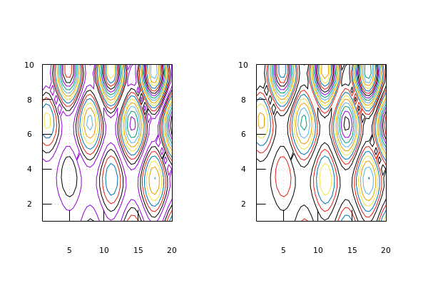
Pie
x = ["Nerds", "Hackers", "Scientists"]
y = [0.4, 0.35, 0.25]
pie(x, y, title = "The Julia Community", l = 0.5)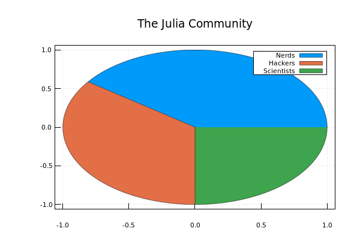
3D
n = 100
ts = range(0, stop = 8π, length = n)
x = ts .* map(cos, ts)
y = (0.1ts) .* map(sin, ts)
z = 1:n
plot(x, y, z, zcolor = reverse(z), m = (10, 0.8, :blues, Plots.stroke(0)), leg = false, cbar = true, w = 5)
plot!(zeros(n), zeros(n), 1:n, w = 10)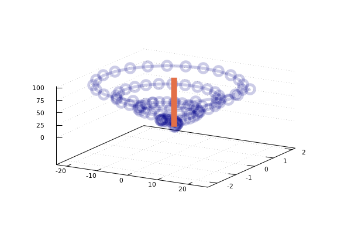
DataFrames
Plot using DataFrame column symbols.
using StatsPlots
import RDatasets
iris = RDatasets.dataset("datasets", "iris")
@df iris scatter(:SepalLength, :SepalWidth, group = :Species, title = "My awesome plot", xlabel = "Length", ylabel = "Width", marker = (0.5, [:cross :hex :star7], 12), bg = RGB(0.2, 0.2, 0.2))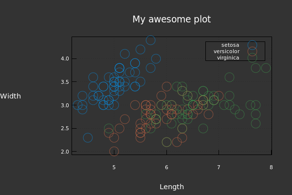
Groups and Subplots
group = rand(map((i->begin
"group $(i)"
end), 1:4), 100)
plot(rand(100), layout = @layout([a b; c]), group = group, linetype = [:bar :scatter :steppre], linecolor = :match)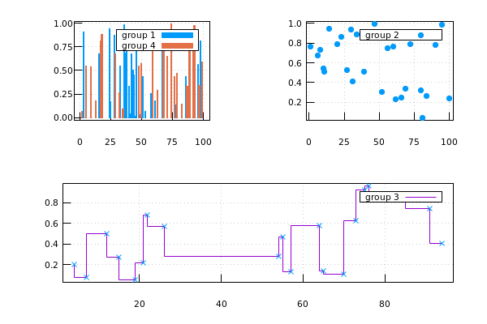
Polar Plots
Θ = range(0, stop = 1.5π, length = 100)
r = abs.(0.1 * randn(100) + sin.(3Θ))
plot(Θ, r, proj = :polar, m = 2)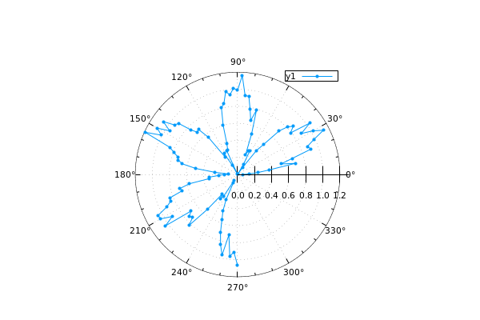
Heatmap, categorical axes, and aspect_ratio
xs = [string("x", i) for i = 1:10]
ys = [string("y", i) for i = 1:4]
z = float((1:4) * reshape(1:10, 1, :))
heatmap(xs, ys, z, aspect_ratio = 1)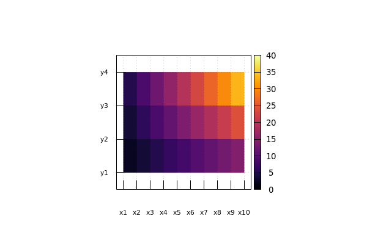
Layouts, margins, label rotation, title location
using Plots.PlotMeasures
plot(rand(100, 6), layout = @layout([a b; c]), title = ["A" "B" "C"], titlelocation = :left, left_margin = [20mm 0mm], bottom_margin = 10px, xrotation = 60)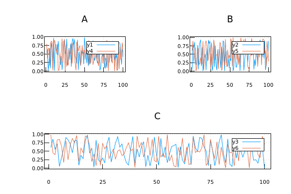
Boxplot and Violin series recipes
using StatsPlots
import RDatasets
singers = RDatasets.dataset("lattice", "singer")
@df singers violin(:VoicePart, :Height, line = 0, fill = (0.2, :blue))
@df singers boxplot!(:VoicePart, :Height, line = (2, :black), fill = (0.3, :orange))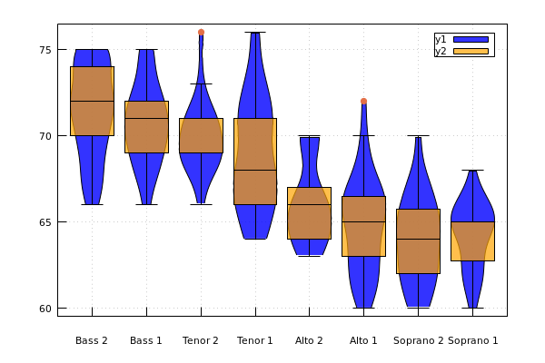
Spy
For a matrix mat with unique nonzeros spy(mat) returns a colorless plot. If mat has various different nonzero values, a colorbar is added. The colorbar can be disabled with legend = nothing.
using SparseArrays
a = spdiagm(0 => ones(50), 1 => ones(49), -1 => ones(49), 10 => ones(40), -10 => ones(40))
b = spdiagm(0 => 1:50, 1 => 1:49, -1 => 1:49, 10 => 1:40, -10 => 1:40)
plot(spy(a), spy(b), title = ["Unique nonzeros" "Different nonzeros"])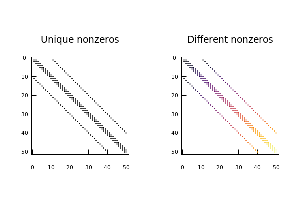
Magic grid argument
The grid lines can be modified individually for each axis with the magic grid argument.
x = rand(10)
p1 = plot(x, title = "Default looks")
p2 = plot(x, grid = (:y, :olivedrab, :dot, 1, 0.9), title = "Modified y grid")
p3 = plot(deepcopy(p2), title = "Add x grid")
xgrid!(p3, :on, :cadetblue, 2, :dashdot, 0.4)
plot(p1, p2, p3, layout = (1, 3), label = "", fillrange = 0, fillalpha = 0.3)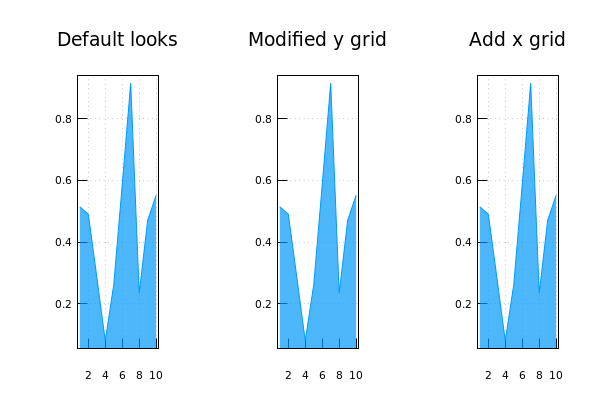
Framestyle
The style of the frame/axes of a (sub)plot can be changed with the framestyle attribute. The default framestyle is :axes.
scatter(fill(randn(10), 6), fill(randn(10), 6), framestyle = [:box :semi :origin :zerolines :grid :none], title = [":box" ":semi" ":origin" ":zerolines" ":grid" ":none"], color = permutedims(1:6), layout = 6, label = "", markerstrokewidth = 0, ticks = -2:2)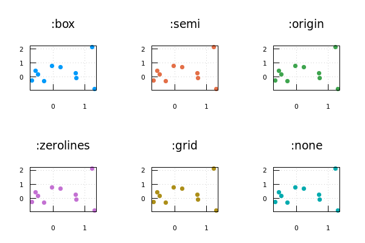
Lines and markers with varying colors
You can use the line_z and marker_z properties to associate a color with each line segment or marker in the plot.
t = range(0, stop = 1, length = 100)
θ = (6π) .* t
x = t .* cos.(θ)
y = t .* sin.(θ)
p1 = plot(x, y, line_z = t, linewidth = 3, legend = false)
p2 = scatter(x, y, marker_z = (+), color = :bluesreds, legend = false)
plot(p1, p2)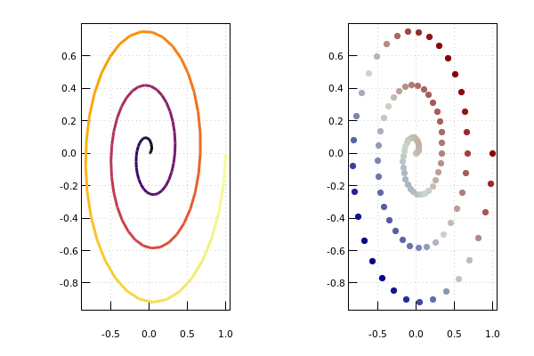
Portfolio Composition maps
see: http://stackoverflow.com/a/37732384/5075246
using Random
Random.seed!(111)
tickers = ["IBM", "Google", "Apple", "Intel"]
N = 10
D = length(tickers)
weights = rand(N, D)
weights ./= sum(weights, dims = 2)
returns = sort!((1:N) + D * randn(N))
portfoliocomposition(weights, returns, labels = permutedims(tickers))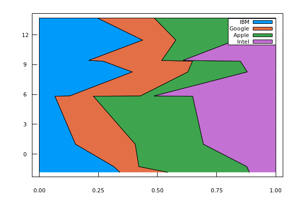
Ribbons
Ribbons can be added to lines via the ribbon keyword; you can pass a tuple of arrays (upper and lower bounds), a single Array (for symmetric ribbons), a Function, or a number.
plot(plot(0:10; ribbon = (LinRange(0, 2, 11), LinRange(0, 1, 11))), plot(0:10; ribbon = 0:0.5:5), plot(0:10; ribbon = sqrt), plot(0:10; ribbon = 1))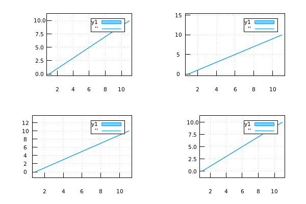
Histogram2D (complex values)
n = 10000
x = exp.(0.1 * randn(n) .+ randn(n) .* im)
histogram2d(x, nbins = (20, 40), show_empty_bins = true, normed = true, aspect_ratio = 1)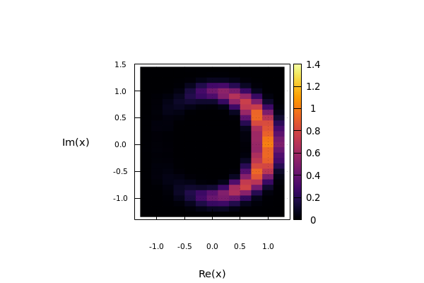
Unconnected lines using missing or NaN
Missing values and non-finite values, including NaN, are not plotted. Instead, lines are separated into segments at these values.
(x, y) = ([1, 2, 2, 1, 1], [1, 2, 1, 2, 1])
plot(plot([rand(5); NaN; rand(5); NaN; rand(5)]), plot([1, missing, 2, 3], marker = true), plot([x; NaN; x .+ 2], [y; NaN; y .+ 1], arrow = 2), plot([1, 2 + 3im, Inf, 4im, 3, -Inf * im, 0, 3 + 3im], marker = true), legend = false)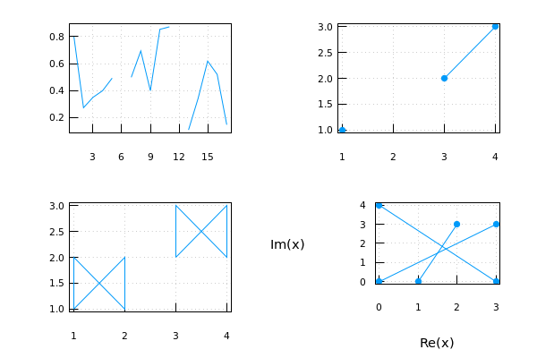
Lens
A lens lets you easily magnify a region of a plot. x and y coordinates refer to the to be magnified region and the via the inset keyword the subplot index and the bounding box (in relative coordinates) of the inset plot with the magnified plot can be specified. Additional attributes count for the inset plot.
begin
plot([(0, 0), (0, 0.9), (1, 0.9), (2, 1), (3, 0.9), (80, 0)], legend = :outertopright)
plot!([(0, 0), (0, 0.9), (2, 0.9), (3, 1), (4, 0.9), (80, 0)])
plot!([(0, 0), (0, 0.9), (3, 0.9), (4, 1), (5, 0.9), (80, 0)])
plot!([(0, 0), (0, 0.9), (4, 0.9), (5, 1), (6, 0.9), (80, 0)])
lens!([1, 6], [0.9, 1.1], inset = (1, bbox(0.5, 0.0, 0.4, 0.4)))
end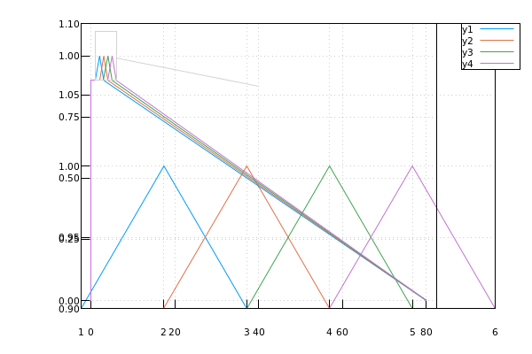
Array Types
Plots supports different Array types that follow the AbstractArray interface, like StaticArrays and OffsetArrays.
begin
using StaticArrays, OffsetArrays
sv = SVector{10}(rand(10))
ov = OffsetVector(rand(10), -2)
plot([sv, ov], label = ["StaticArray" "OffsetArray"])
plot!(3ov, ribbon = ov, label = "OffsetArray ribbon")
end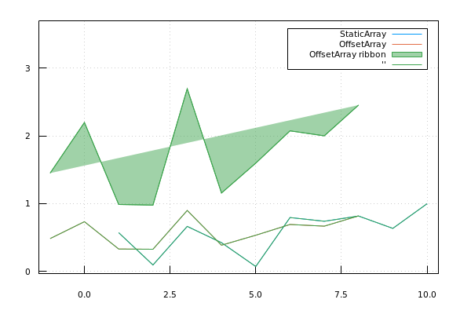
Setting defaults and font arguments
begin
default(titlefont = (20, "times"), legendfontsize = 18, guidefont = (18, :darkgreen), tickfont = (12, :orange), guide = "x", framestyle = :zerolines, yminorgrid = true)
plot([sin, cos], -2π, 2π, label = ["sin(θ)" "cos(θ)"], title = "Trigonometric Functions", xlabel = "θ", linewidth = 2, legend = :outertopleft)
end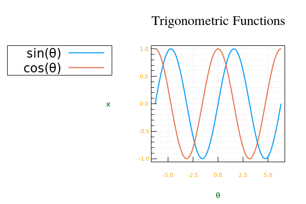
Heatmap with DateTime axis
begin
using Dates
z = rand(5, 5)
x = DateTime.(2016:2020)
y = 1:5
heatmap(x, y, z)
end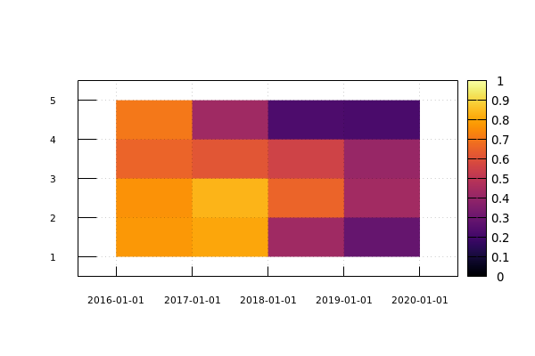
Linked axes
begin
x = -5:0.1:5
plot(plot(x, (x->begin
x ^ 2
end)), plot(x, (x->begin
sin(x)
end)), layout = 2, link = :y)
end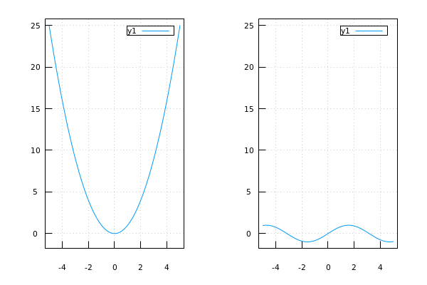
Error bars and array type recipes
begin
struct Measurement <: Number
val::Float64
err::Float64
end
value(m::Measurement) = begin
m.val
end
uncertainty(m::Measurement) = begin
m.err
end
@recipe function f(::Type{T}, m::T) where T <: AbstractArray{<:Measurement}
if !(get(plotattributes, :seriestype, :path) in [:contour, :contourf, :contour3d, :heatmap, :surface, :wireframe, :image])
error_sym = Symbol(plotattributes[:letter], :error)
plotattributes[error_sym] = uncertainty.(m)
end
value.(m)
end
x = Measurement.(10 * sort(rand(10)), rand(10))
y = Measurement.(10 * sort(rand(10)), rand(10))
z = Measurement.(10 * sort(rand(10)), rand(10))
surf = Measurement.((1:10) .* (1:10)', rand(10, 10))
plot(scatter(x, [x y]), scatter(x, y, z), heatmap(x, y, surf), wireframe(x, y, surf), legend = :topleft)
end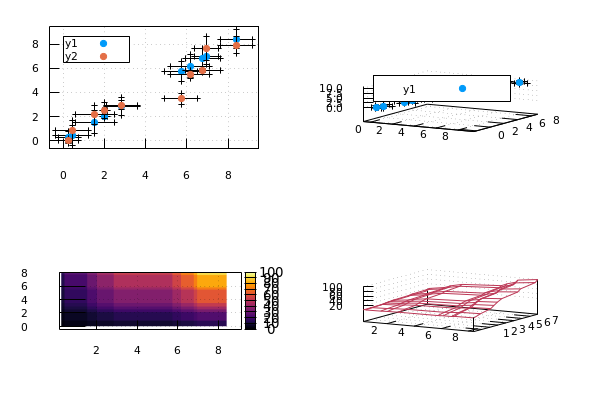
Tuples and Points as data
using GeometryBasics
using Distributions
d = MvNormal([1.0 0.75; 0.75 2.0])
plot([(1, 2), (3, 2), (2, 1), (2, 3)])
scatter!(Point2.(eachcol(rand(d, 1000))), alpha = 0.25)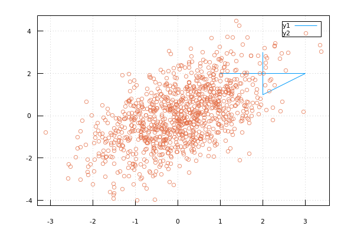
Mesh3d
Allows to plot arbitrary 3d meshes. If only x,y,z are given the mesh is generated automatically. You can also specify the connections using the connections keyword. The connections can be specified in two ways: Either as a tuple of vectors where each vector contains the 0-based indices of one point of a triangle, such that elements at the same position of these vectors form a triangle. Or as a vector of NTuple{3,Ints} where each element contains the 1-based indices of the three points of a triangle.
x = [0, 1, 2, 0]
y = [0, 0, 1, 2]
z = [0, 2, 0, 1]
i = [0, 0, 0, 1]
j = [1, 2, 3, 2]
k = [2, 3, 1, 3]
mesh3d(x, y, z; connections = (i, j, k), title = "triangles", xlabel = "x", ylabel = "y", zlabel = "z", legend = :none, margin = 2 * Plots.mm)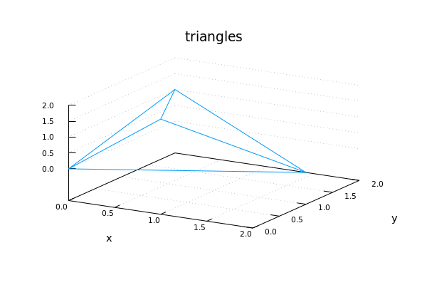
Vectors of markershapes and segments
using Base.Iterators: cycle, take
yv = ones(9)
ys = [1; 1; NaN; ones(6)]
y = 5 .- [yv 2ys 3yv 4ys]
plt_color_rows = plot(y, seriestype = [:path :path :scatter :scatter], markershape = collect(take(cycle((:utriangle, :rect)), 9)), markersize = 8, color = collect(take(cycle((:red, :black)), 9)))
plt_z_cols = plot(y, markershape = [:utriangle :x :circle :square], markersize = [5 10 10 5], marker_z = [5 4 3 2], line_z = [1 3 3 1], linewidth = [1 10 5 1])
plot(plt_color_rows, plt_z_cols)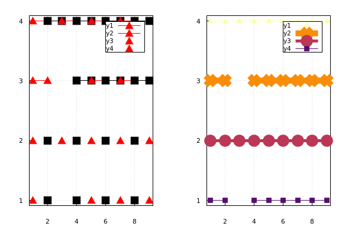
Images with custom axes
using TestImages
img = testimage("lighthouse")
plot([-π, π], [-1, 1], reverse(img, dims = 1), yflip = false, aspect_ratio = :none)
plot!(sin, -π, π, lw = 3, color = :red)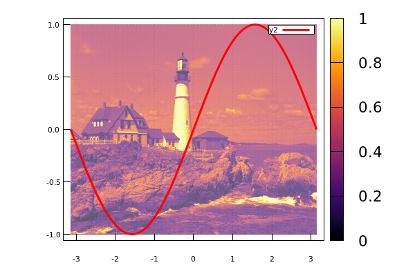
3d quiver
ϕs = range(-π, π, length = 50)
θs = range(0, π, length = 25)
θqs = range(1, π - 1, length = 25)
x = vec([sin(θ) * cos(ϕ) for (ϕ, θ) = Iterators.product(ϕs, θs)])
y = vec([sin(θ) * sin(ϕ) for (ϕ, θ) = Iterators.product(ϕs, θs)])
z = vec([cos(θ) for (ϕ, θ) = Iterators.product(ϕs, θs)])
u = 0.1 * vec([sin(θ) * cos(ϕ) for (ϕ, θ) = Iterators.product(ϕs, θqs)])
v = 0.1 * vec([sin(θ) * sin(ϕ) for (ϕ, θ) = Iterators.product(ϕs, θqs)])
w = 0.1 * vec([cos(θ) for (ϕ, θ) = Iterators.product(ϕs, θqs)])
quiver(x, y, z, quiver = (u, v, w))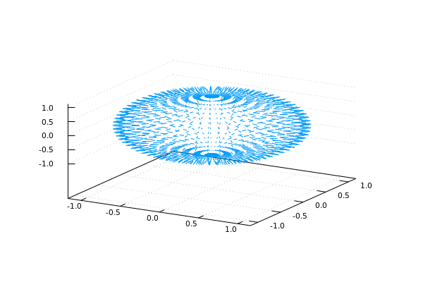
Step Types
A comparison of the various step-like seriestypes
x = 1:5
y = [1, 2, 3, 2, 1]
default(shape = :circle)
plot(plot(x, y, markershape = :circle, seriestype = :steppre, label = "steppre"), plot(x, y, markershape = :circle, seriestype = :stepmid, label = "stepmid"), plot(x, y, markershape = :circle, seriestype = :steppost, label = "steppost"), layout = (3, 1))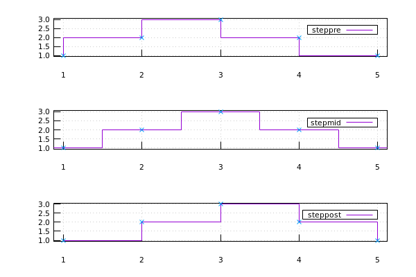
Guide positions and alignment
plot(rand(10, 4), layout = 4, xguide = "x guide", yguide = "y guide", xguidefonthalign = [:left :right :right :left], yguidefontvalign = [:top :bottom :bottom :top], xguideposition = :top, yguideposition = [:right :left :right :left], ymirror = [false true true false], xmirror = [false false true true], legend = false, seriestype = [:bar :scatter :path :stepmid])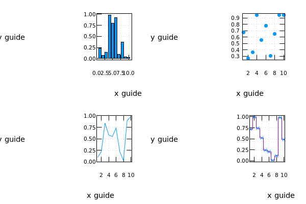
3D axis flip / mirror
using LinearAlgebra
scalefontsizes(0.4)
(x, y) = (collect(-6:0.5:10), collect(-8:0.5:8))
args = (x, y, ((x, y)->begin
sinc(norm([x, y]) / π)
end))
kwargs = Dict(:xlabel => "x", :ylabel => "y", :zlabel => "z", :grid => true, :minorgrid => true)
plots = [wireframe(args..., title = "wire"; kwargs...)]
for ax = (:x, :y, :z)
push!(plots, wireframe(args..., title = "wire-flip-$(ax)", xflip = ax == :x, yflip = ax == :y, zflip = ax == :z; kwargs...))
end
for ax = (:x, :y, :z)
push!(plots, wireframe(args..., title = "wire-mirror-$(ax)", xmirror = ax == :x, ymirror = ax == :y, zmirror = ax == :z; kwargs...))
end
plt = plot(plots..., layout = @layout([_ ° _; ° ° °; ° ° °]), margin = 0 * Plots.px)
resetfontsizes()
plt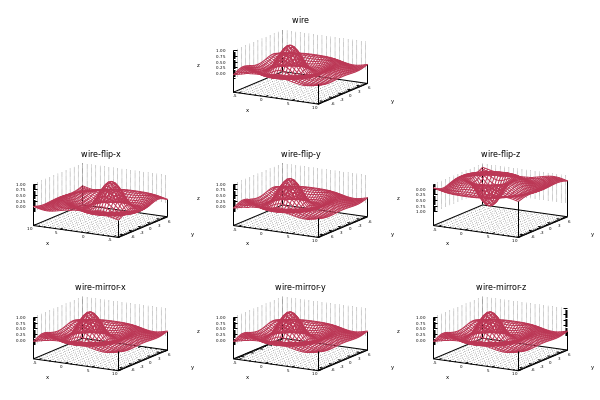
Bar plot customizations
Width of bars may be specified as bar_width. The bars' baseline may be specified as fillto. Each may be scalar, or a vector spcifying one value per bar.
plot(bar([-1, 0, 2, 3], [1, 3, 6, 2], fill_z = 4:-1:1, alpha = [1, 0.2, 0.8, 0.5], label = "", bar_width = 1:4), bar(rand(5), bar_width = 1.2, alpha = 0.8, color = [:lightsalmon, :tomato, :crimson, :firebrick, :darkred], fillto = 0:-0.1:-0.4, label = "reds"))Vertical and horizonal spans
vspan and hspan can be used to shade horizontal and vertical ranges.
hspan([1, 2, 3, 4]; label = "hspan", legend = :topleft)
vspan!([2, 3]; alpha = 0.5, label = "vspan")
plot!([0, 2, 3, 5], [-1, 3, 2, 6]; c = :black, lw = 2, label = "line")- Supported arguments:
annotations,arrow,aspect_ratio,background_color,background_color_subplot,bottom_margin,color_palette,connections,discrete_values,flip,foreground_color,foreground_color_subplot,grid,group,guide,guide_position,guidefont,html_output_format,label,layout,left_margin,legend,legendfont,lims,linealpha,linecolor,linestyle,linewidth,link,margin,markeralpha,markercolor,markershape,markersize,polar,primary,projection,quiver,right_margin,rotation,scale,series_annotations,seriesalpha,seriescolor,seriestype,show,show_empty_bins,size,smooth,subplot,subplot_index,tick_direction,tickfont,ticks,title,top_margin,window_title,x,xdiscrete_values,xerror,xflip,xgrid,xguide,xguide_position,xlims,xlink,xrotation,xscale,xtick_direction,xticks,y,ydiscrete_values,yerror,yflip,ygrid,yguide,yguide_position,ylims,ylink,yrotation,yscale,ytick_direction,yticks,z,z_order,zdiscrete_values,zerror,zflip,zgrid,zguide,zguide_position,zlims,zlink,zrotation,zscale,ztick_direction,zticks - Supported values for linetype:
:contour,:contour3d,:heatmap,:image,:mesh3d,:path,:path3d,:scatter,:scatter3d,:shape,:stepmid,:steppost,:steppre,:straightline,:surface,:wireframe,:xsticks,:ysticks - Supported values for linestyle:
:auto,:dash,:dashdot,:dashdotdot,:dot,:solid - Supported values for marker:
:+,:auto,:circle,:cross,:diamond,:dtriangle,:none,:pentagon,:pixel,:rect,:star5,:utriangle,:x,:xcross
(Automatically generated: 2022-03-17T13:32:42.334)